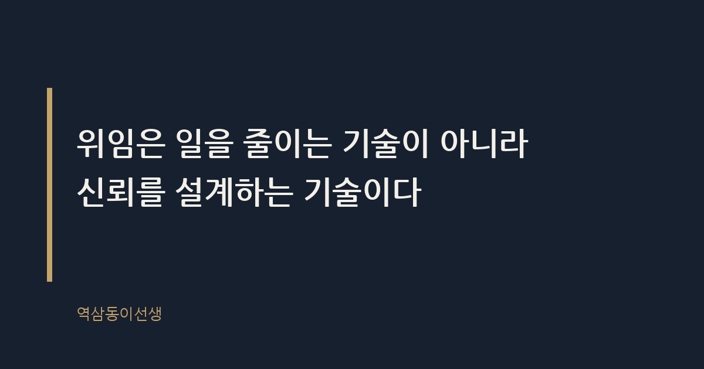
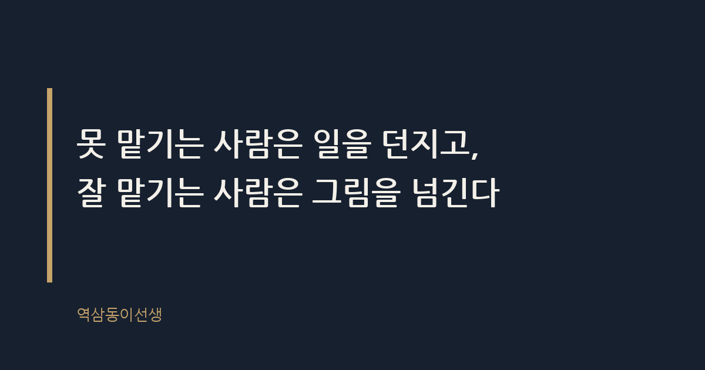

주제 일을 잘 맡기는 사람과 못 맡기는 사람의 차이 (evergreen / office)
제목 후보
메타 설명 일을 잘 맡기는 사람과 못 맡기는 사람은 '맡긴다'의 정의부터 다르다. 회의실에서 본 위임의 실제 차이와 위임 대화법을 정리했다.
라벨 위임, 직장생활, 리더십, 일잘러, 팀장, 매니지먼트, 일맡기는법, 위임잘하는법, 업무위임방법, 신입사원교육
실용 자산 예시 문장 모음 — 위임 상황에서 쓰는 실제 화법을 비교 제시해 독자가 바로 따라 말할 수 있게 하는 것이 검색 의도와 가장 맞다
발행 전 팩트체크
이미지 (Blogger 편집기에 드래그해 넣으세요)
도입부 사진 · ⓒ StockSnap / Pexels


신입사원 하나가 보고서를 들고 자리로 왔다. "팀장님이 이거 알아서 해보라고 하셨는데, 뭘 알아서 해야 하는지 모르겠어요." 표정이 반쯤 울상이었다. 옆 팀 이야기를 들어보니 팀장이 던진 말은 딱 한 줄, "이거 다음 주까지 정리해서 줘"가 전부였다고 한다. 같은 주, 다른 팀장은 신입에게 보고서를 맡기면서 목적과 분량, 참고할 자료 세 개, 중간보고 시점까지 메모 한 장에 적어 건넸다. 두 팀장 다 "일을 맡겼다"고 말했지만, 받은 사람이 느낀 건 완전히 달랐다.
일을 잘 맡기는 사람과 못 맡기는 사람의 차이는 능력이 아니라 일을 넘기기 전에 무엇을 먼저 정리했는가에서 갈린다. 일만 던지는 사람은 책임을 피하고, 그림을 함께 넘기는 사람은 신뢰를 쌓는다. 이 차이가 몇 달 뒤 팀 전체의 속도와 사기를 가른다.
위임이란 일의 실행권과 함께 판단 기준까지 넘기는 것이다. 잘 맡기는 사람을 지켜보면 공통점이 있다. 일을 넘기기 전에 머릿속으로 이미 완성본을 그려본다. "이 보고서가 잘 나왔다면 어떤 모습일까"를 먼저 상상하고, 그 그림의 윤곽만 상대에게 전달한다. 세세한 방법까지 다 알려주지는 않는다. 대신 목적지는 분명히 찍어준다.
이런 팀장 밑에서 일한 적이 있다. 보고서를 맡기면서 늘 세 가지만 말했다. 이 자료를 누가 읽을 것인지, 그 사람이 궁금해할 질문이 무엇인지, 그리고 마감 전에 한 번은 꼭 가져와 보라는 것. 신입이든 연차 있는 직원이든 이 세 가지만 받으면 길을 잃지 않았다. 방법은 각자 찾으라고 뒀지만 목적지는 절대 흐리지 않았다.
반대로 방향도 안 주고 방법만 세세하게 지시하는 상사도 많다. 그건 위임이 아니라 원격 조종이다. 일을 맡겼다고 말은 하지만 실제로는 자기 손을 거쳐야만 끝나는 구조를 만들어 둔 것이다.
못 맡기는 사람의 특징은 역설적으로 '너무 많이 알려준다'가 아니라 '너무 적게, 그것도 불안하게' 알려준다는 데 있다. "알아서 해봐"라는 말 뒤에 숨는 이유는 단순하다. 본인도 완성본의 그림을 그려본 적이 없기 때문이다. 그림이 없으니 설명할 말도 없고, 그래서 짧게 던지고 끝낸다.
또 다른 패턴은 일을 맡겨놓고 중간에 계속 간섭하는 경우다. 월요일에 맡기고 화요일에 와서 "어떻게 돼가?"를 묻고, 수요일에 또 와서 방향을 바꾼다. 받는 사람 입장에서는 일을 맡은 게 아니라 숙제 검사를 매일 받는 셈이다. 이런 상사는 권한은 주지 않은 채 책임만 상대에게 떠넘긴 격이 된다.
마지막 패턴은 결과가 마음에 안 들 때 "내가 말한 건 이게 아니었는데"라고 하는 유형이다. 처음부터 기준을 말하지 않았으면서 결과만 보고 판단을 내린다. 이런 상사 밑에서 몇 번 당하면 다음부터는 묻지도 따지지도 않고 상사가 원할 법한 답만 그대로 베껴 온다. 창의성이 사라지는 지점이 바로 여기다.
방임이란 권한만 넘기고 책임은 끝까지 쥐고 있지 않은 상태를 말한다. 반면 위임이란 권한과 함께 책임의 경계까지 미리 설계해 넘기는 일이다. 말로는 둘 다 "맡겼다"로 들리지만 결과는 전혀 다르게 나타난다.
마케팅팀에서 실제로 본 장면이 있다. 팀장이 신규 캠페인 기획을 후배에게 맡기면서 "예산 집행 전까지는 따로 보고 안 해도 돼"라고 했다. 후배는 그 말을 "전적으로 믿는다"는 뜻으로 받아들였다. 그런데 집행 막판에 예산이 초과되자 팀장은 "왜 미리 말을 안 했냐"며 다그쳤다. 후배 입장에서는 보고하지 말라고 해놓고 보고 안 했다고 혼난 셈이다. 이게 바로 방임이 위임의 탈을 쓴 장면이다.
진짜 위임이었다면 "예산 집행 전까지는 세세한 건 안 물어볼게, 다만 20% 이상 변동이 생기면 그 즉시 알려줘"처럼 경계선을 명확히 그어줬을 것이다. 믿는다는 말과 방치한다는 말은 겉보기에 비슷해도 받는 사람에게는 전혀 다른 무게로 다가온다.
이 차이가 벌어지는 이유는 위임을 '일을 덜어내는 행위'로 보느냐, '사람을 키우는 행위'로 보느냐가 다르기 때문이다. 일만 던지는 사람은 위임을 자기 업무량 줄이기로 생각한다. 그러니 최소한의 정보만 주고 손을 뗀다. 반면 잘 맡기는 사람은 위임을 통해 그 사람이 다음 단계로 올라서는 과정이라고 본다. 그래서 처음엔 시간이 더 들어도 기준을 설명하는 데 공을 들인다.
또 하나의 원인은 통제 욕구다. 결과가 잘못될까 봐 불안한 사람일수록 일을 맡겨놓고도 계속 들여다본다. 역설적이게도 이런 불안이 클수록 결과는 더 나빠진다. 담당자가 자기 판단으로 움직이지 못하고 상사 눈치만 보게 되기 때문이다. 조직 안에서 위임이 특히 어려운 이유는, 맡기는 사람의 불안을 다루는 기술이 맡는 사람의 역량보다 더 큰 변수로 작용하기 때문이다.
임원 보고 자리에서 이런 장면을 본 적이 있다. 담당 과장이 자료를 들고 들어왔는데, 임원이 질문을 던지기도 전에 먼저 "이 부분은 제 판단으로 뺐습니다. 이유는 이렇습니다"라고 말했다. 평소 팀장이 "결과가 틀려도 네 판단의 과정을 먼저 설명해"라고 반복해서 말해둔 덕분이었다. 불안을 상대에게 전염시키지 않는 상사 밑에서는 이런 장면이 자연스럽게 나온다.
위임을 잘하는 사람은 모두에게 같은 방식으로 맡기지 않는다. 신입에게는 체크포인트를 촘촘하게 두고, 연차가 쌓인 사람에게는 목적지만 던진다. 같은 업무라도 받는 사람의 경험치에 따라 위임의 밀도를 다르게 가져가야 한다는 뜻이다.
디자인팀에서 본 사례가 그랬다. 똑같이 "맡긴다"는 말을 썼지만 체크 빈도는 완전히 달랐다. 신입 디자이너는 "방향이 맞는지 중간에 확인할 수 있어서 안심이 됐다"고 했고, 고참 디자이너는 "일일이 안 물어봐 줘서 오히려 더 몰입할 수 있었다"고 했다.
위임의 밀도를 똑같이 맞추면 신입은 불안해하고 고참은 답답해한다. 받는 사람의 경험치를 먼저 가늠하고 그에 맞춰 체크포인트의 간격을 조절하는 것, 그게 잘 맡기는 사람이 조용히 해내는 일이다.
같은 업무를 맡기더라도 어떤 말을 쓰느냐에 따라 받는 사람이 그리는 그림이 완전히 달라진다. 실제 회의실에서 자주 들었던 표현을 비교해본다.
말 몇 마디 차이 같지만, 받는 사람은 이 말에서 자기가 '맡겨진 사람'인지 '시킴을 당한 사람'인지를 바로 구분한다. 같은 업무, 같은 시간을 들여도 결과물의 질이 달라지는 이유가 여기에 있다.
위임을 잘하는 사람은 일을 넘기기 전에 머릿속으로 짧게라도 다음 세 가지를 점검한다. 거창한 절차가 아니라 습관에 가깝다.
이 세 가지를 1분이라도 생각하고 일을 넘기는 사람과, 생각 없이 그냥 던지는 사람은 몇 주 뒤 팀의 공기부터 다르다. 전자의 팀원은 질문을 두려워하지 않고, 후자의 팀원은 질문 자체를 포기한다.
일을 잘 맡기는 사람 곁에는 시간이 지날수록 믿고 일을 맡길 사람이 늘어난다. 반대로 못 맡기는 사람 곁에는 지시만 기다리는 사람만 남는다. 위임은 결국 사람을 키우는 투자이기도 하고, 동시에 자기 그릇을 시험하는 일이기도 하다. 처음엔 손해 보는 것 같아도, 몇 달 뒤 보면 결국 잘 맡긴 사람이 더 큰 일을 할 시간을 벌어둔 것이다.
솔직히 말하면 나도 완벽하게 맡긴 적보다 불안해서 다시 들여다본 적이 더 많았다. 그런데 돌이켜보면 그렇게 들여다본 순간마다 상대의 표정이 살짝 굳는 걸 느꼈다. 씁쓸하면서도 꽤 선명한 기억이다.
Q. 일을 맡길 때 방향만 주고 방법은 믿고 맡기는 편인가요, 아니면 끝까지 손을 놓지 못하는 편인가요?